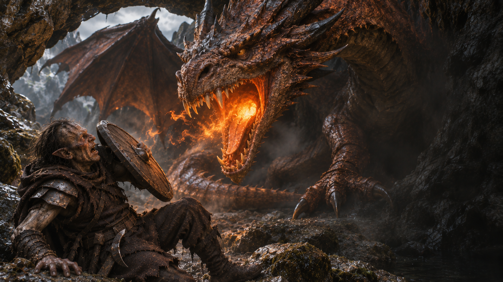

Fin de l’aventure · Concours perdu
Un Orc bien cuit
Un compliment raté. Une réponse brûlante.
Découvrir votre sortLe compliment de trop
Le dragon cesse de sourire. Sa queue frappe le sol et une pierre tombe de l’arche. Vous tentez de préciser que, dans votre caserne, « de beaux restes » est presque une déclaration d’amour.
« c'est censé me satisfaire orc ? »
Une lueur orange apparaît au fond de sa gorge. Vous n’avez que le temps de lever votre bouclier avant qu’un torrent de flammes ne vous engloutisse. Votre armure devient un four. La traque s’achève ici.
Vous vouliez un repas chaud. Le dragon aussi.